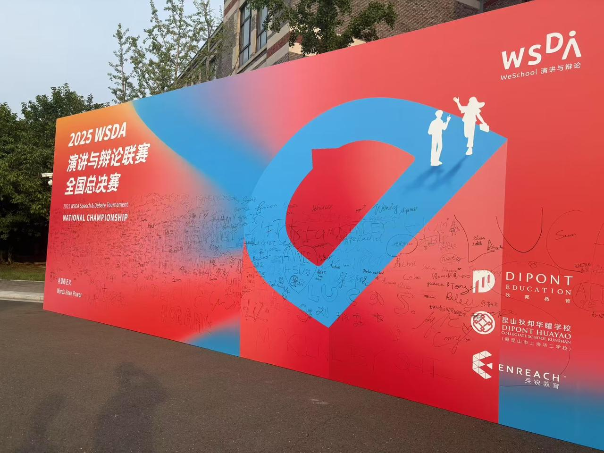

I grew up watching the TED talks of Sir Ken Robinson and Simon Sinek. Their speeches inspired me to one day step onto the TED stage. Language, to me, carries power.
TEDxGCGS 2024
I organized TEDxGCGS 2024, inviting five speakers to explore what "change" means today. 500+ people attended, and I served as the host.


TEDxGCGS 2025
At TEDx 2025, I delivered a talk on how soccer influences the lives and future pathways of Xinjiang's youth.


Public Speaking Competitions
WSDA-Original Oratory: Regional Champion & 9th in National Finals
e-china: National Finalist



Other Stages